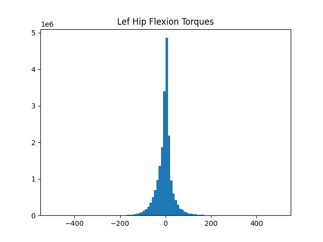

Answering Questions with AddBiomechanics Data
You can use the AddBiomechanics data to answer questions about the biomechanics of the human body. Here are a few worked examples, to spark your imagination.
Plotting histograms of joint torques
If you are designing an exoskeleton, you might want to understand the biological torque levels at each joint.
Here is a simple example to get you started:
import nimblephysics as nimble
import argparse
from typing import List
import numpy as np
import time
import os
import matplotlib.pyplot as plt
import pandas as pd
def main(b3d_file_path: str):
# Load the B3D file
subjects: List[nimble.biomechanics.SubjectOnDisk] = []
paths = []
if os.path.isdir(b3d_file_path):
for dirpath, dirnames, filenames in os.walk(b3d_file_path):
for file in filenames:
if file.endswith('.b3d'):
path = os.path.join(b3d_file_path, file)
print(f'Loading {path}')
paths.append(file)
subjects.append(nimble.biomechanics.SubjectOnDisk(path))
else:
assert(b3d_file_path.endswith('.b3d'))
print(f'Loading {os.path.join(b3d_file_path)}')
subjects.append(nimble.biomechanics.SubjectOnDisk(b3d_file_path))
print('Reading first skeleton')
skel = subjects[0].readSkel(subjects[0].getNumProcessingPasses()-1, ignoreGeometry=True)
dof_names = []
for i in range(skel.getNumDofs()):
dof_names.append(skel.getDofByIndex(i).getName())
print(dof_names)
left_hip = dof_names.index('hip_flexion_l') # positive moves leg forwards, negative moves leg backwards
left_hip_torques = []
for s, subject in enumerate(subjects):
print(f'Processing {s+1}/{len(subjects)}')
trials = subject.getNumTrials()
for trial in range(trials):
length = subject.getTrialLength(trial)
passes = subject.getTrialNumProcessingPasses(trial)
frames = subject.readFrames(trial, 0, length, includeSensorData=True, includeProcessingPasses=True)
for t in range(len(frames)):
frame: nimble.biomechanics.Frame = frames[t]
if frame.missingGRFReason != nimble.biomechanics.MissingGRFReason.notMissingGRF:
continue
pos = frame.processingPasses[passes-1].pos
taus = frame.processingPasses[passes-1].tau
if np.abs(taus[left_hip]) < 500.0:
left_hip_torques.append(taus[left_hip])
left_hip_torques = np.array(left_hip_torques)
# Plot a histogram of the torques
plt.hist(left_hip_torques, bins=100, label='Left Hip Torques')
plt.title('Lef Hip Flexion Torques')
plt.show()
if __name__ == "__main__":
# Create the parser
parser = argparse.ArgumentParser(description='This loads a set of B3D files, and works out the human + exo torques '
'involved in simulating the desired virtual body. It can then compute '
'parameters for a series-elastic-actuator (SEA) to achieve the '
'desired torque. It can also simulate the SEA, and plot the results')
# Add an argument
parser.add_argument('--b3d_file_path',
default='../../training_data/train',
type=str,
help='Path to the b3d file to load, or directory of B3Ds to load')
# Parse the arguments
args = parser.parse_args()
main(os.path.abspath(args.b3d_file_path))
The above script will load a set of B3D files, and plot a histogram of the torques at the left hip joint.
{kind=link}